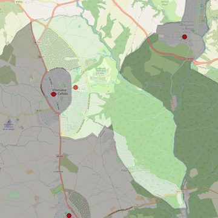

San Carlos Borromeo
- Arciprestazgo
- Villaviciosa de Odón
- Población
- Villanueva de la Cañada
- Dirección postal
- Avda. de la Universidad, 2
- Código postal
- 28691
- Extensión
- 17,46 km² (1.746 ha)
- Teléfono
- 918 156 103
- Correo electrónico
- sancarlosborromeo-villanuevadelacanada@diocesisgetafe.es


Descargar mapaLímites según decreto
“Partiendo de la confluencia de la carretera M-600 con la Avenida de la Dehesa, arrancan por el eje carretera M-600 (en dirección sur); siguen por los límites de los términos municipales de Villanueva de la Cañada-Brunete (en dirección sureste), Villanueva de la Cañada-Villaviciosa de Odón (en dirección noroeste), Villanueva de la Cañada-Boadilla del Monte (en dirección noroeste), por el río Aulencia (en dirección noroeste), por el límite de los términos municipales de Villanueva de la Cañada-Villanueva del Pardillo (en dirección noroeste), por una línea recta imaginaria hasta la glorieta donde terminan la calle Las Azucenas (en dirección sur) y por el eje de la Avenida de la Dehesa (en dirección suroeste) hasta la confluencia con la carretera M-600, punto de partida”. (Decreto de erección de la parroquia, B.O., Junio-2007, pág. 712)